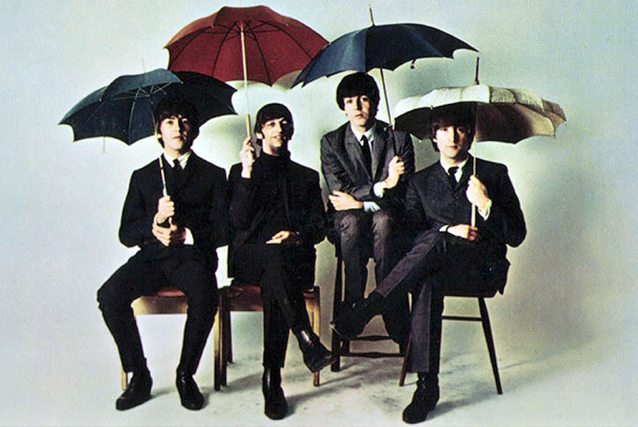

Curiosidades
1. Era frecuente encontrar en la libreta de evaluaciones de John Lennon en la escuela, la frase: "este niño va camino del fracaso"
2. El primer LP de los Beatles, "Please, please me", fue grabado completo en un solo día.
3. La canción "Yesterday" ha sido la más grabada por diferentes artistas en la historia, con un record de 1300 versiones.
4. Cuando Los Beatles fueron por primera vez a Hamburgo, George Harrison fue deportado por no tener la mayoría de edad para viajar a Alemania.
5. Lo que más impresionó a John Lennon acerca de Paul McCartney cuando se conocieron en 1956 fue que éste sabía afinar la guitarra.
